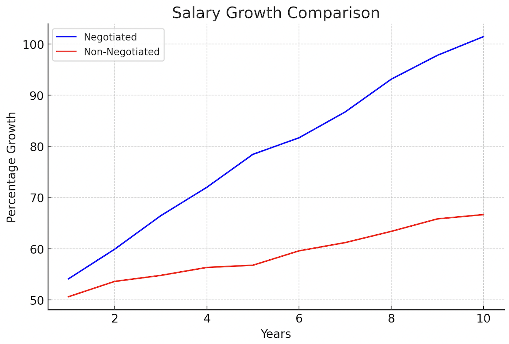

薪資談判對於職業發展至關重要，直接影響個人財務狀況與職場滿意度。
"根據統計，積極談判的員工比不談判者的起薪高出約7%。"
長期來看，談判初期的薪資差異會因為加薪百分比的累積效應而進一步放大。例如，起薪差距每年以3%的加薪率累積，10年後薪資差距將顯著擴大。(如下圖)
"根據《職場薪酬報告》，沒有進行薪資談判的員工在職業生涯中可能損失高達500,000美元的總收入。"
因此，掌握薪資談判的技巧不僅能夠提升初始薪資，也是實現長期職業目標與財務自由的關鍵步驟，學習薪資談判技巧是職場中必備且相當重要的技能。 
然而，在學校的環境裡很難有機會學習到薪資談判的技巧。
因此我們建立了一款關於薪資談判的聊天機器人，用於指導你一切有關於薪資談判的事。
它以chatgpt為基礎，並具有專業的薪資談判知識與流暢清晰的闡述能力。
接下來會請你和薪資談判聊天機器人互動，學習薪資談判的相關知識。
然而，在學校的環境裡很難有機會學習到薪資談判的技巧。
因此，我們開發了一款用於指導薪資談判的聊天機器人，它結合chatgpt，並利用大量薪資談判相關資料強化訓練而成，具有專業的薪資談判知識與流暢清晰地闡述能力。
接下來會請你和薪資談判指導員互動，學習薪資談判的相關知識。